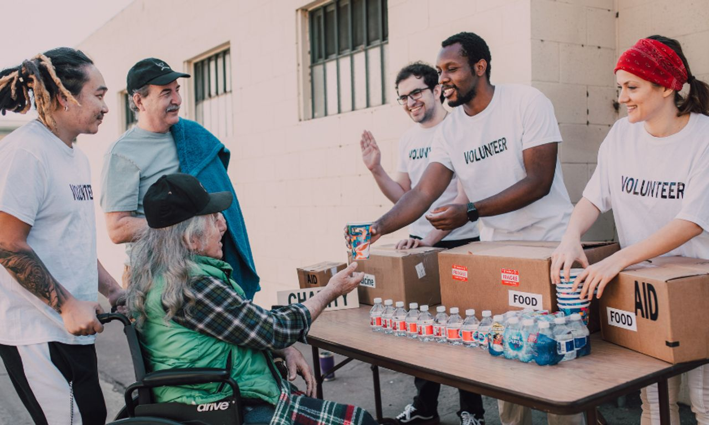

| Home | About Us |
|---|
Opportunities
Our Programs
Commnity for Hope offers programs and initiative sdesigned to meet the needs of the Oshkosh community. These efforts focus on promoting well-being, strengthening relationships, and providing access to helpful resources. Examples of activities and services indclude:
- Community support events and outreach programs
- Educational workshops and yough engagement opportunities
- Resource assitance for individuals and families
- Partnerships with local organizations to expand community services

Volunteer Opportunities
Volunteer are essential to the success of Community for Hope. Individuals who want to make a positive impact can participate in a variety of ways, such as:
- Helping organize and run community events
- assiting with fundraising or donation drives
- Mentoring or supporting yough programs
- Contributing time, skills, or resources to outreach efforts
Volunteering not only benefits those receiving support, but also helps build stronger conections throught the community. Come give it a try!
Contact Us
Community for Hope is based in Oshkosh, Wisconsin, and serves residents throughout the surrounding area.
Our Address: Mercy-Oakwood Center, 2700 W. 9th Avenue, Suit 100, Oshkosh, WI 54901
Phone: (920-230-4840) (This is not a crisis line)
If you are in need of immediate assistance, dial/text 988 or Text "HOPELINE" to 741741